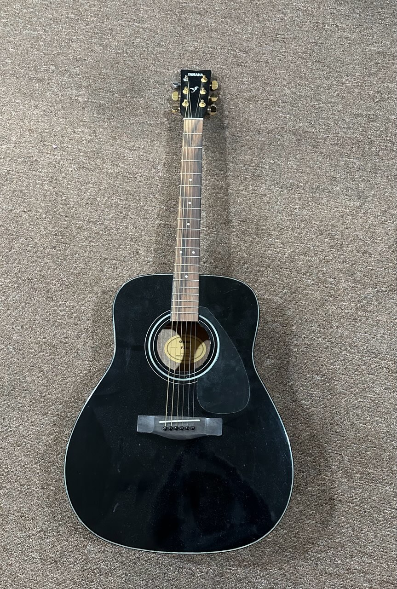
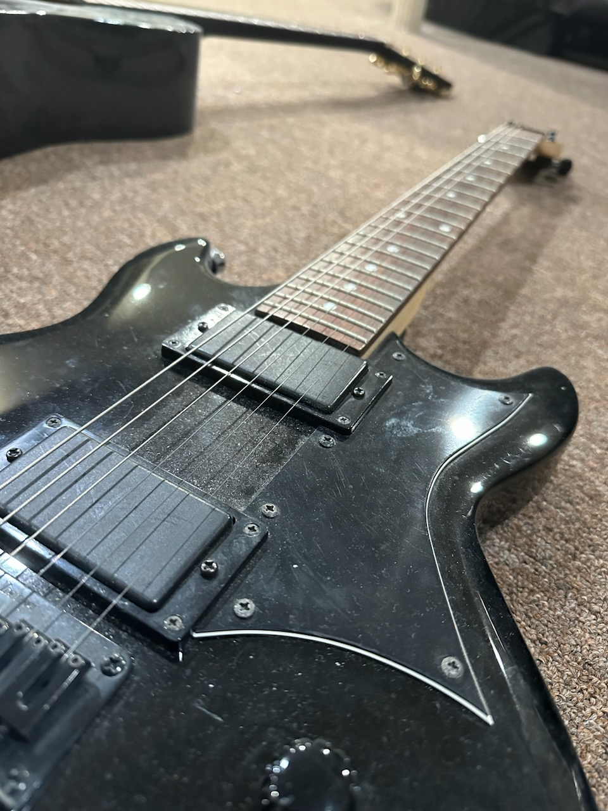

The Soul of Rock & Roll
We help write, record, and finalize Rock & Roll music. From album sequencing to mixing and mastering, live instrumentation and gear loans.
Artists Worked With
- Tame Impala
- Damian
- November Has Come
Rock & Roll's core elements
| Guitar | Bass | Reverb | Drumming | The frontman |
|---|---|---|---|---|
| Electric and acoustic guitars | Electric and upright basses | Various reverb effects | Live drum recording | Lead vocalist or instrument player |
Gear available for use:

Beautiful black wooden acoustic guitar from YAMAHA. Perfect for folk, pop, and rock music. Click the photo above to learn the history of YAMAHA!

A guitar powered by electricity, many amps and pedals available.
Other services
- Instrument tuning
- Mic feedback management
- Instrument cleaning
- Soundproofing consultation
- Session musician arrangement